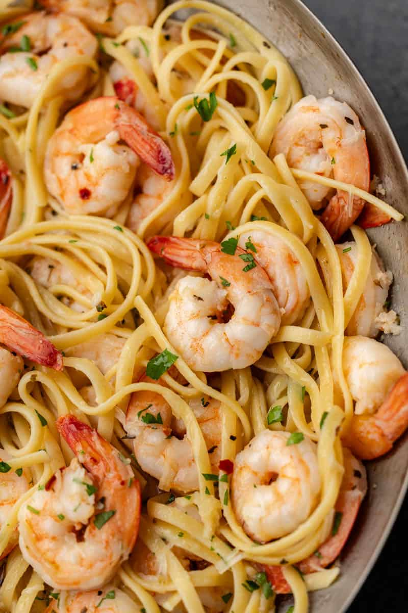

Shrimp Scampi

What is Shrimp Scampi?
Shrimp scampi pasta is a dish that brings the essence of gourmet dining to your family table with ease. Its combination of tenderly cooked shrimp and linguine, tossed in a luxuriously buttery and garlicky sauce, speckled with red pepper flakes and a squeeze of fresh lemon juice, creates a taste that is both rich and refreshing. This dish, ready in just 15 minutes, is perfect for moms looking to whip up a quick yet sophisticated meal that caters to both adult tastes and kids’ love for pasta.
Ingredients
- 1 pound linguine pasta
- 4 tablespoons salted butter
- 2 tablespoons olive oil
- 1 tablespoon minced garlic
- 1 pound shrimp , peeled and deveined
- 1 teaspoon salt , or to taste
- 1/2 teaspoon crushed red pepper flakes
- 1/2 cup white wine
- 1/4 cup lemon juice
- 1 teaspoon Italian seasoning
- 2 tablespoons grated parmesan cheese
- 2 tablespoons chopped fresh parsley
Instructions
- Cook the pasta in lightly salted water according to package directions.
- Meanwhile, melt butter in a saucepan over medium high heat with olive oil. Add in garlic and shrimp. Season with salt and red pepper flakes. Stir continuously until shrimp just turns pink, about 2 minutes.
- Pour in white wine to deglaze pan. Stir in lemon juice and Italian seasoning and simmer for 3 to 5 minutes.
- Add cooked pasta to skillet and toss to coat. Top with parmesan cheese and garnish with chopped fresh parsley. Serve immediately.
Go Back